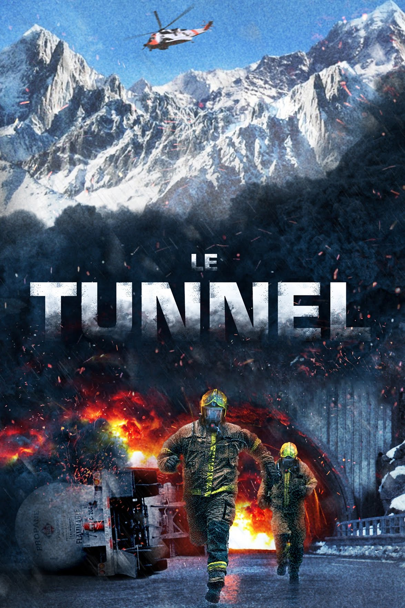
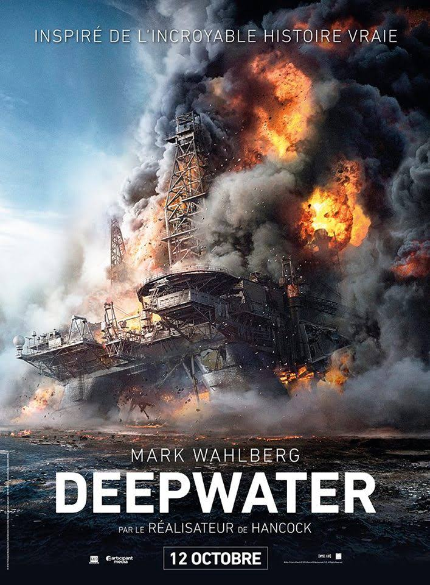
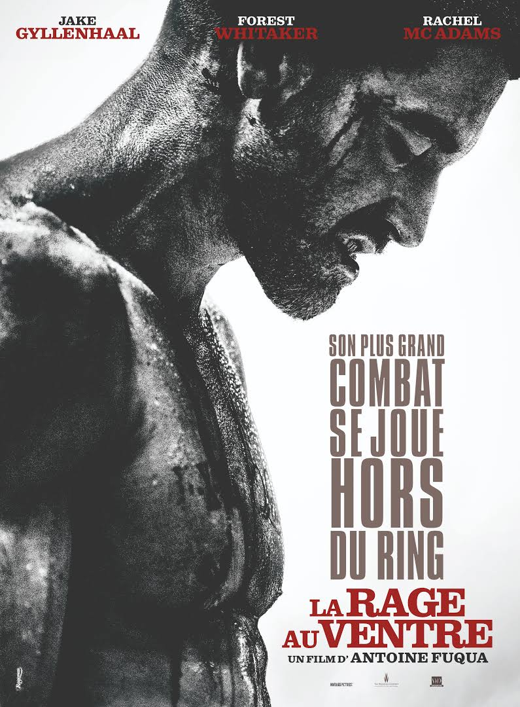
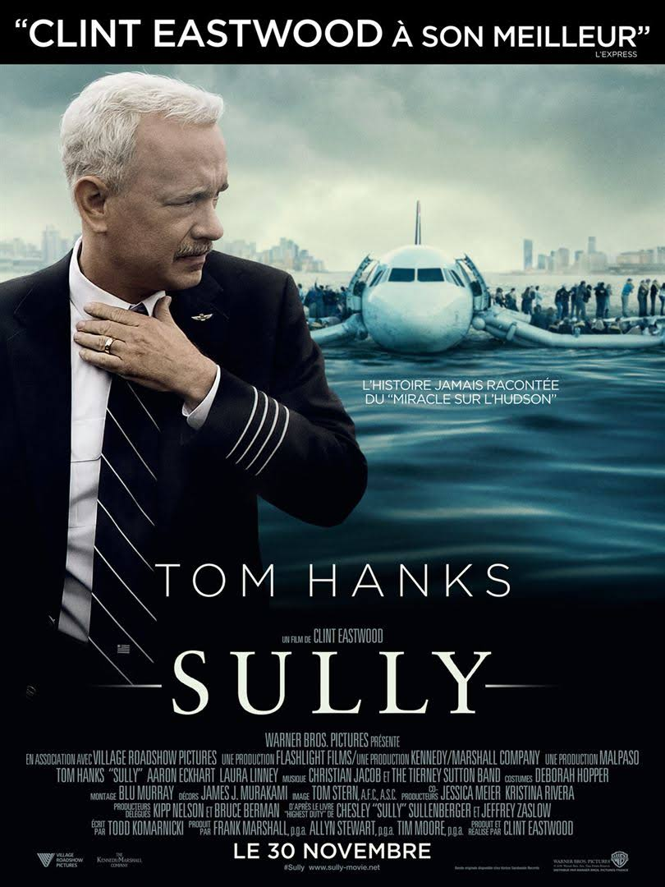
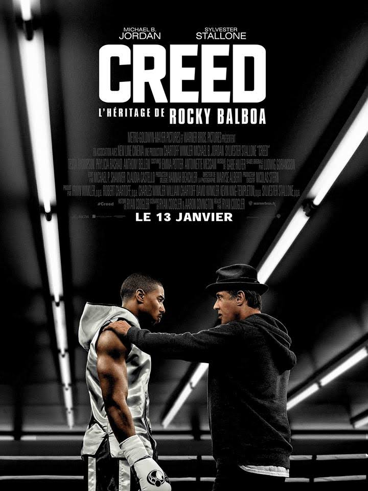
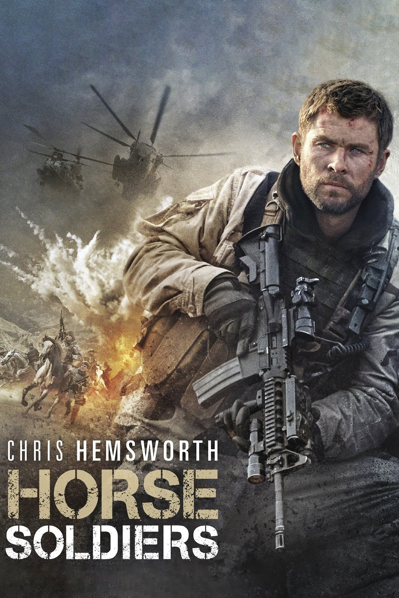
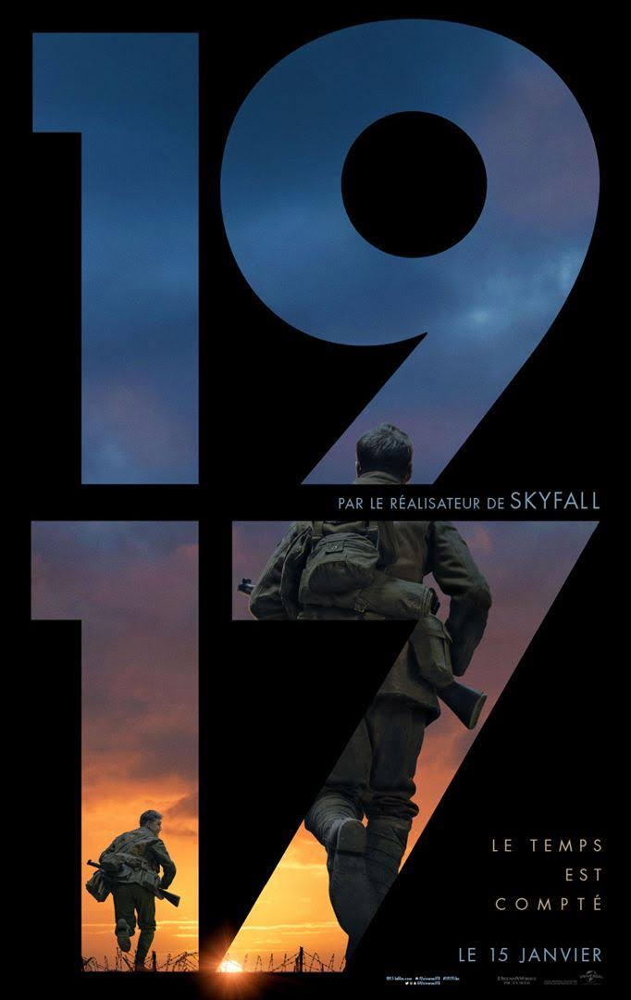

Bonjour madame, monsieur ,
Chaque film aura un lien qui vous montrera une bande d'annonce et un autre qui vous montrera les autre film fait par le réalisateur.
Chaque film coutera 5,99$.
| Numero du film | Nom | Déscription | réalisateur | Type | prix |
|---|---|---|---|---|---|
| 11 |  | Un camion-citerne entre en collision dans un tunnel d'une zone glaciale de Norvège. Les automobilistes sont bloqués à l'intérieur alors que les premiers secours ne peuvent accéder à l'accident à cause d'une tempête de neige. | Pål Øie | Drama | 5,55$ |
| 12 |  | La plateforme pétrolière Deepwater Horizon n'arrête pas de tourner pour tirer profit des 800 millions de litres de pétrole présents dans les profondeurs du golfe du Mexique. Mike Williams connaît les risques de son métier, mais fait confiance au professionnalisme de son patron Jimmy Harrell. | Peter Berg | Drama | 5,55$ |
| 13 |  | Champion du monde de boxe, Billy Hope mène une existence fastueuse avec sa superbe femme et sa fille qu'il aime plus que tout. Lorsque sa femme est tuée, son monde s'écroule, jusqu'à perdre sa maison et sa fortune. Pire, la garde de sa fille lui est retirée, la justice estimant son comportement incompatible avec son rôle de père. Au plus bas, il trouve une aide précieuse en la personne de Tick Willis, un ancien boxeur avec lequel il reprend l'entrainement. | Antoine Fuqua | Drama | 5,55$ |
| 14 |  | Le 15 janvier 2009, le monde a assisté au miracle sur l'Hudson accompli par le commandant Sully Sullenberger : en effet, celui-ci a réussi à poser son appareil sur les eaux glacées du fleuve Hudson, sauvant ainsi la vie des 155 passagers à bord. Cependant, alors que Sully était salué par l'opinion publique et les médias pour son exploit inédit dans l'histoire de l'aviation, une enquête a été ouverte, menaçant de détruire sa réputation et sa carrière. | Clint Eastwood | Drama | 5,55$ |
| 15 |  | Après quelques victoires faciles sur le ring de boxe, Adonis, fils du grand champion Apollo Creed, tente de se tailler une place parmi les professionnels. Il quitte Los Angeles et se rend à Philadelphie pour rencontrer Rocky Balboa, vieux rival et ami de son père. | Ryan Coogler | Drama | 5,55$ |
| 16 | La vie et l'œuvre musicale d'Elvis Presley à travers le prisme de ses rapports complexes avec son mystérieux manager, le colonel Tom Parker. | Baz Luhrmann | Drama | 5,55$ | |
| 17 |  | Le capitaine Mitch Nelson est le chef de l'unité des Forces Spéciales qui a été choisie pour une périlleuse mission secrète. Son détachement et lui sont envoyés en Afghanistan, en plein conflit armé, pour apporter leur aide aux Afghans dans leur lutte contre les talibans. | Nicolai Fuglsig | Drama | 5,55$ |
| 18 | Fred est policier dans un groupe antiterroriste chargé de retrouver les fugitifs les plus recherchés de France. Lors d'une mission en Grèce, Fred et ses hommes ont malheureusement perdu la trace d'un suspect. Dix mois plus tard, la France est frappée par une série d'attentats. | Cédric Jimenez | Drama | 5,55$ | |
| 19 |  | Lorsque la Première Guerre mondiale frappe le monde, deux soldats britanniques, caporal suppléant Schofield et caporal suppléant Blake, reçoivent une mission qui leur semble impossible: ils doivent traverser le territoire ennemi pour délivrer un message. | Sam Mendes | Drama | 5,55$ |
| 20 | |
En juin 2018, douze jeunes footballeurs d'une équipe de football et leur entraîneur se retrouvent bloqués dans une grotte du massif de Doi Nang Non, en Thaïlande. En raison d'une importante montée des eaux, l'opération de sauvetage prend du temps, malgré les énormes moyens déployés. | Ron Howard | Drama | 5,55$ |